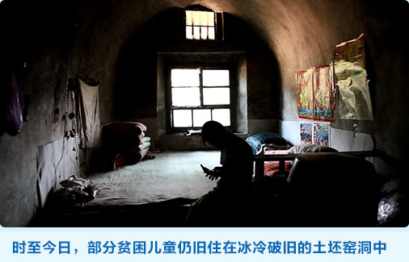

数以千万计需要救助的贫困儿童
家庭变故而陷入困境，他们有的甚至吃不饱饭、无人照顾。
被劝说回到学校上课的孩子仍旧会因为多种原因而再次辍学
单亲家庭的孩子可能会因为父母再婚而被遗弃；
孤儿们可能会因为生病而陷入困境；
孩子每月的补助可能被监护人滥用…
您可以帮助贫困儿童过上健康正常的生活
一份爱心，就能改变命运
在中国，由于儿童福利制度尚未完善，还有数以千万计需要救助的贫困儿童。
每年也还有新的脆弱儿童因家庭变故而陷入困境，他们有的甚至吃不饱饭、无人照顾。